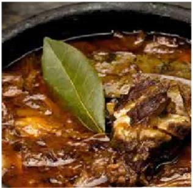

Chapter 5 · Matching food with wine
Chanfana

Is a typical dish from the mountains of central Portugal. Miranda do Corvo is known as the “Capital of Chanfana” but it seems to have historically originated in Spain (chanfaina). The slow, careful way it is cooked is what makes this dish so special. The old goat meat, is marinated in red wine, garlic, salt, bay leaf and black pepper or paprika for 24 hours, cooked in a wood-fired oven, inside a black clay pot for around 4 hours, resulting in intense flavours.
Wine: This plate of poor ingredients but novel characteristics due to its full-bodied complexity requires red wines from varieties such as Touriga Nacional or Baga from Dão or Bairrada.
Explanation: Heavy red wines with a strong body with a high density of phenolic substances and tannin-induced spiciness can hold their own alongside the heavy flavour of soft-boiled old goat meat or mutton with the smoky notes from being prepared in a wood fire. A fresh type of wine as an elegant counterpart to this dish is not known.
(Source: G. Michelin)